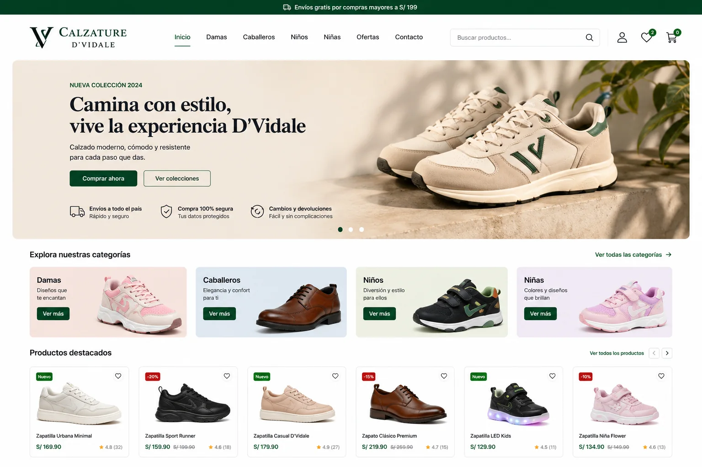
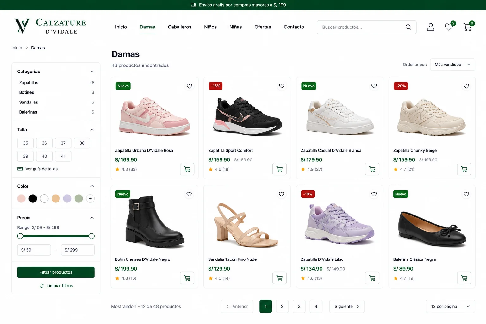
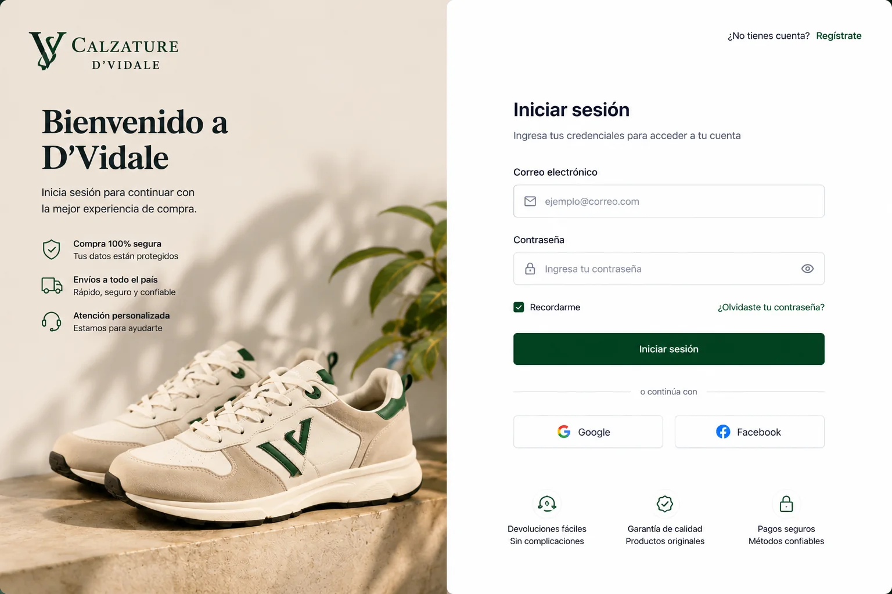

WEB · E-COMMERCE
CALZATURE D’VIDALE
Tienda virtual con pantallas reales de inicio, catálogo de productos e inicio de sesión, construida con tecnologías web.

01 / Contexto
Problema y enfoque
El objetivo documentado es presentar un flujo de tienda virtual donde un usuario pueda descubrir productos, acceder al catálogo y gestionar su acceso mediante una interfaz web coherente.
El proyecto reúne una página principal, una vista de productos y una pantalla de inicio de sesión. La solución utiliza HTML, CSS, JavaScript y PHP según la documentación del portafolio original.
02 / Alcance
Qué se documentó
El caso se presenta únicamente con información y pantallas que ya formaban parte del portafolio original, sin añadir métricas ni resultados no verificados.
- 01Página principal orientada a presentar la tienda.
- 02Catálogo visual de productos.
- 03Pantalla de inicio de sesión.
- 04Base tecnológica web con PHP para el proyecto.
03 / Gallery
El producto, a pantalla completa.
Las capturas se muestran como evidencia principal del trabajo, sin marcos decorativos que oculten la interfaz.

